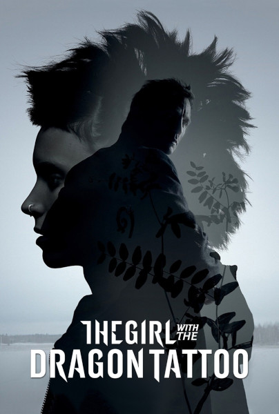
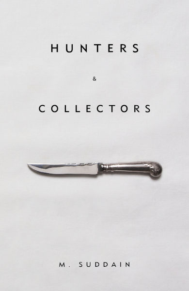

Dead Boy Detectives
2024
A glorious romp of a YA‑Fantasy show. Two dead boys set themselves up
as detectives, solving a chaotic collection of cases for other ghosts. The
show has several queer characters, ranging from meat-cleaver wielding Lesbian,
Jenny green, to uptight Edwin Payne. One of the main characters, his arc
revolves around him accepting his sexuality

The Girl With The Dragon Tattoo
2011
A dark and confronting film. Yet for all it's intense scenes and complex
plot it still follows a conventional "Investigator chases serial killer"
structure. Lisbeth, a protagonist, gets one Lesbian fling that has no
bearing on the rest of the film

Love192
2025
This is a beautiful short film. Video games spaces are weird, and become
extra weird when shared with other people. Love192 gets that, exploring
a romantic relationship between 2 boys who connected online. It's a
tender and honest story that has surprising emotional depth.

Hunters and Collectors
M.Suddain
Misanthrope and intergalactic food critic, John Tamberlain, is on the
hunt for a mythical hotel. There is a gay side character who aids him
that is described as "one of the good ones". Another gay side character
also appears just to destroy Tamberlains life for the *drama* (not one
of the good ones). There's also a (presumably?) straight man running
around in drag near the end, so it's a mixed bag of representation.

Russian Doll
2019
A mind bending fantasy driven by Natasha Lyonne, an incredible *ally*.
I totally read two side characters as dating, but according to the wiki
they are just friends. either way there's enough queer energy in season 1
for me to count this as a queer show.

Scavengers Regin
2023
Amongst the survivors trying to make their own way across an alien
planet, one of them has a lesbian romance in their back story. In
season 1 we only see flashbacks of their courtship.

Arcane
2021
A fantasy tale of Shakespearean proportions. Season 1 hints at a sapphic
romance between two main characters that is featured in season 2.
My own personal ship is between Viktor and Jason, however this is
unfortunately not cannon.

Stranger by the Lake
2013
This film finds a unique take on the common pairing of danger and desire.
It's premise and plot are simple, but this gives more space to ponder the
film's themes. Looking is not a passive act, and gay cruising grounds are
a ripe place to explore this.

Edge of Seventeen
1998
Released in 1998 and set in 1984, this queer coming of age film takes
some unusually somber turns when compared with it's post 2000s
counterparts. Being queer was harder then, and it shows in the culture,
and this film.